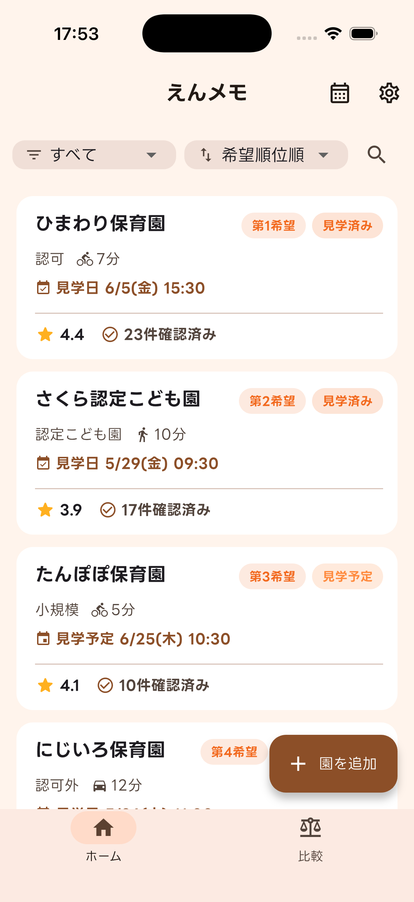

保活を、
ひとつにまとめて。
えんメモは保育園探し（保活）をサポートするアプリ。 園の情報も、見学の記録も、予定も、ぜんぶ端末の中だけで管理。 アカウント不要で、オフラインでも安心して使えます。

データは端末内のみ
アカウント登録不要
オフラインで使える
無料（広告あり）
えんメモでできること
見学の「前・当日・あと」、そして申込みまで。保活の流れをまるごとサポートします。
見学チェックリスト
保育士の視点を参考にした標準テンプレート付き。各項目に「どこを見ればいいか」の観点がついているから、初めての見学でも安心。項目は自由に追加・カスタマイズできます。
評価・点数化
項目ごとに5段階スコアを記録。総合点は自動で集計されるので、印象を数字で残せます。メモや写真も一緒に保存できます。
複数園をまとめて比較
登録した園を横並びで比較。総合点・チェック状況・アクセスをひと目で見比べて、わが家に合う園選びをサポートします。
カレンダー＆リマインダー
見学の予定や申込みの締め切りをカレンダーで管理。1日前・1週間前など、好きなタイミングで通知を受け取れるので、大事な日を忘れません。
持ち物・質問リスト
見学当日の持ち物チェックリストと、園に聞きたい質問リストを用意。質問への回答は園ごとに記録できるから、あとから比較するときにも役立ちます。
PDFで印刷・持ち出し
比較表やチェックリストはPDFに出力できます。印刷して見学に持って行ったり、手書きでメモを書き足したり、家族と共有するのにも便利です。
申込み・選考まで、ひとつの流れで
園ごとのステータスを切り替えるだけで、いまどの段階かがすぐわかります。
気になる
→
見学予定
→
見学済み
→
申込み済み
→
内定
希望順位の管理や、キャンセル待ち・見送りのステータスにも対応しています。
えんメモで、保活をはじめよう
iOS / Android / タブレットに対応。